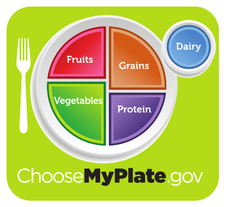

Healthy Foods
What is considered a "healthy food"?
A Healthy Diet is different for each person due to different body types, and depends on many other health variables such as food allergies, dietary restrictions or intolerances.
Food Pyramid
The majority of your plate should consist of vegetables, meat, fruits and grains.
Sugars and Sweets should be very limited.
